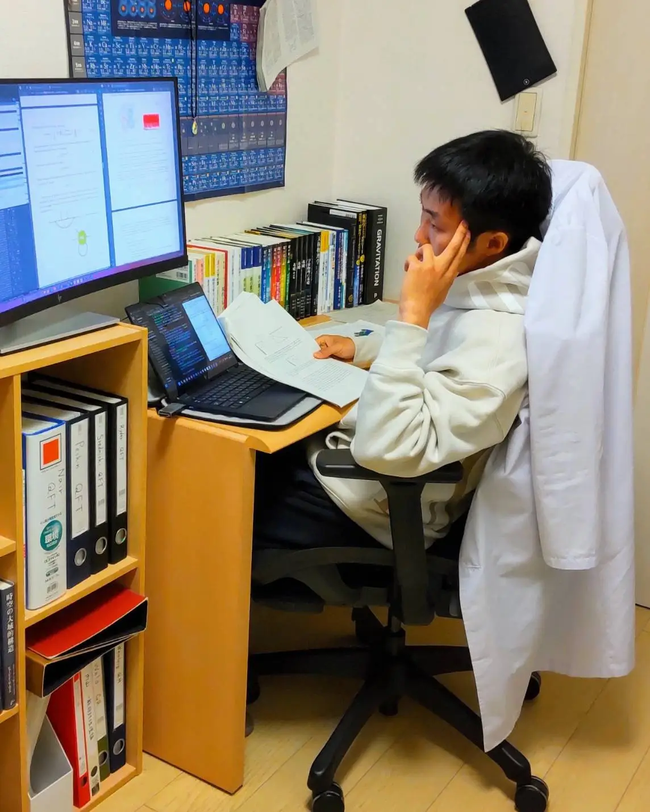

01 — Profile
Max Miyazaki
- 東京都立大学大学院理学研究科物理学専攻
- 素粒子理論研究室
- 修士2年
その辺に転がっている落ちこぼれ理系大学院生。専門は物理学だが、学問全般に興味を持っており自主的に幅広く学んでいる。研究分野は「宇宙の始まり」で、詳しくは研究内容のページを参照。学問に関する発信活動もしており、それに伴い創作活動を行うほか、個人事業も営んでいる。
東京都立大学大学院
素粒子理論研究室・修士2年
物理学
学問全般を自主的に幅広く学ぶ
宇宙の始まり
02 — Research
研究分野
専門は初期宇宙理論。暗黒物質の有力候補である「アクシオン」が、宇宙の始まりにどのように生まれ、現在どれだけ残っているのかを理論的に研究している。初期宇宙でアクシオンのエネルギーが非常に大きいと、ゆっくり動いていても光（放射）のように振る舞い、その後「非線形遷移」を経て暗黒物質になる。この効果を取り入れてアクシオン暗黒物質の存在量やエネルギー分布を見直し、原始ブラックホールの形成などの関連現象も議論した研究は、学術誌 Journal of High Energy Physics に掲載されている。
Paper: Revisiting axion dark matter with nonlinear transitions JHEP 05 (2026) 119arXiv:2509.13292
03 — Interests
興味あること
学問
- 有機化学
- 生化学
- 薬理学
- 救急医学
- 航空宇宙
- 実践心理学
- 外国語
- プログラミング
創作
- イラスト
- 動画作成
- アニメーション
趣味
- チェス
- ピアノ
- テニス
- 武術
- etc...
ほぼ独学でやっているだけなので、詳しい方がいましたら是非教えてほしいです。
04 — History
経歴
- 東京都立多摩科学技術高等学校 入学
- 東京都立多摩科学技術高等学校 卒業
- 東京都立大学理学部物理学科 入学
- 東京都立大学理学部物理学科 高エネルギー理論研究室配属
- 東京都立大学理学部物理学科 卒業
- 東京都立大学理学研究科物理学専攻 入学＆素粒子理論研究室配属現在